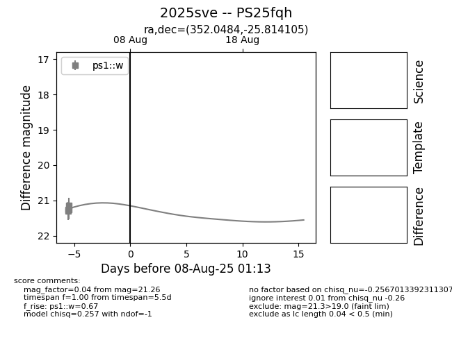

Target 2025sve at 2025-08-08 03:29, see:
TNS: wis-tns.org/object/2025sve
YSE: ziggy.ucolick.org/yse/transient_detail/2025sve
alt names
2025sve (yse,tns)
PS25fqh (panstarrs)
coordinates:
equatorial (ra, dec) = (352.0484,-25.81410)
galactic (l, b) = (32.2428,-71.34575)
photometry
last ps1::w=21.26
4 ps1::w detections
